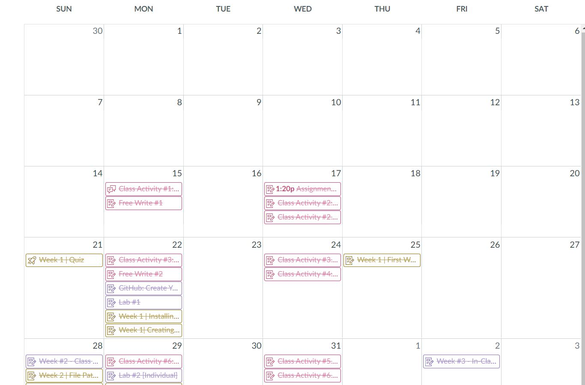

About Me
Hello again, I am Alex!I am writing in this box as filler because I do not know what to say. It is currently dark outside as I'm doing this. I have another homework assingment to do after this. Lately I've been procrastinating, which is a very bad habit of mine. Overall I am having fun in this course, I am learning. This is a whole new experience for me. I occasionally show my parents what I am working on in school and explain how certain functions work. In highschool I always hated work in general, never less homework. So getting back to doing homework is not fun, at Community College of Rhode Island I rarely got homework. Fun fact if you read this far, I hated highschool so much I actually dropped out and got my G.E.D. It's funny to me because I sweared up and down I would never attend college, then my parents forced me to go to CCRI. After that I willingly decided to come to New England Institute Of Technology for even more education. So far I think I'm doing well, but overall I'm happy with my experience.
